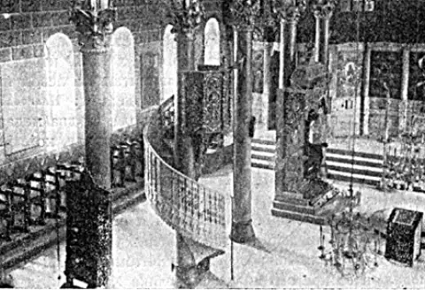
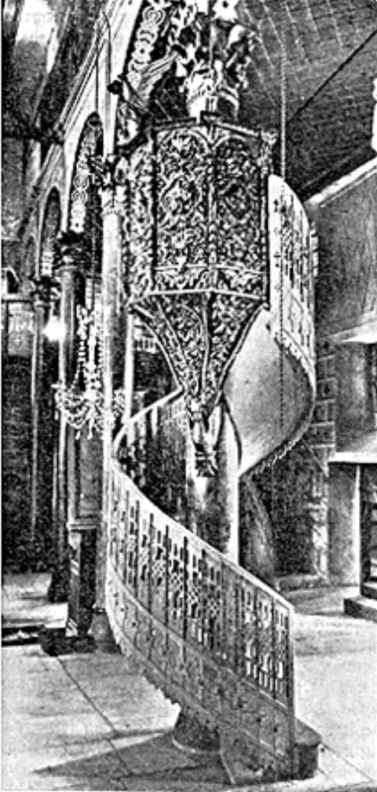

Geschichte · 1944
Details der Kirche Hl. Muttergottes
13 Fotos aus dem Inneren der Kathedralkirche Hl. Muttergottes. Mehr unter Christliche Gotteshäuser.

Das Innere der Hl. Muttergottes - der Kathedralkirche. Links die Kanzel in Tiefschnitzerei, rechts an der Säule näher zum Altar der Bischofsthron.


Das Nordschiff der Kirche mit der Kanzel und
den königlichen Thron.

Das Südschiff mit dem Bischofsthron.


Die Kanzel, 1838 in kunstvoller Holzschnitzerei gefertigt, und die Treppe daneben.

Der Bischofsthron in der Kirche Hl. Muttergottes,
angefertigt 1838.

Der königliche Thron in der Kirche.

Das Mittelschiff der Kirche Hl. Muttergottes mit der Ikonostase und dem Bischofsthron.

Der obere Teil des Mittelschiffs mit einer Blindkuppel in der Decke.

Der obere Teil der Ikonostase (in Tiefschnitzerei) wurde 1838 aus Nussholz gefertigt, der untere Teil aus weißem Marmor.

Die Westseite mit der Frauenkirche (auf der Empore).

Blick auf die Säulen und die Wand des Mittelschiffs (Nordseite).

Die rechte Seite der Marmorikonostase mit den Ikonen Christi des Erlösers und des Hl. Johannes des Täufers.

Die linke Seite der Marmorikonostase mit den Ikonen der Allheiligen Gottesmutter und ihrer Geburt.